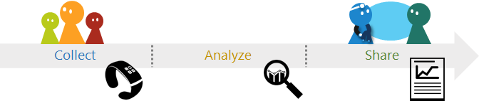

Workshop at the International Conference on Pervasive Computing Technologies for Healthcare (PervasiveHealth 2017)
May 23, 2017 | Barcelona, Spain
Leveraging Patient-Generated Data Workshop

Patients are tracking and generating an increasingly large volume of personal health data outside the clinic due to an explosion of wearable sensors and mobile health (mHealth) apps. The potential usefulness of these patient-generated data (PGD) is enormous as they can provide good measures of patients’ everyday behavior and lifestyle. However, it is less clear how we can fully leverage these PGD and integrate them into clinical practices.
We broadly define PGD as health-related data created, recorded, or gathered by patients (or by family members or other caregivers) to help address their health concerns. These data could include, for example, physical activity, sleep, food, and blood glucose levels. They can be collected using manual journaling, consumer health tracking devices, smartphone apps, and/or medical devices (e.g., blood glucose meter). In addition, PGD includes any independent lab results or tests ordered by the patients themselves (e.g., ubiome, 23andMe, and LabCorp). PGD also includes PROMIS® (Patient-Reported Outcomes Measurement Information System), which is “a set of person-centered measures that evaluates and monitors physical, mental, and social health in adults and children. It can be used with the general population and with individuals living with chronic conditions.”
Although PGD could have immense value for patient care, clinicians cannot effectively use the data until the data are properly shared between patients and clinicians. PGD sharing can be classified based on where it occurs (distributed vs. co-located), when it occurs (synchronous vs. asynchronous), and whether it is patient-initiated vs. clinician-initiated. The practical details of how people would share PGD in each of these contexts might differ, but we believe that various summarization techniques, along with data visualizations and visual analytics will play an important role in making PGD valuable for clinicians and patients, helping them gain critical insights and reflect on the data. Sharing personal data with clinicians, and with friends and family, also raises many interesting questions regarding privacy, social norms, and workflow interruptions. Moreover, patients who suffer from a chronic disease often find that self-tracking is burdensome and sharing of data aggravates that burden. Even motivated patients can be discouraged by increased awareness of the disease, the scattered nature of self-tracking tools, and the data collection burden, making PGD hard to collect, and thus to share.
To tackle these issues, various research communities such as Human-Computer Interaction (HCI), Health Informatics, Ubiquitous Computing, and Information Visualization (InfoVis) have been designing and developing technologies to foster self-tracking, data exploration, data visualization, and data sharing between patients and clinicians. However, these communities have been putting siloed research efforts making it difficult to leverage expertise from related fields. Several workshops have focused on topics such as doctor-patient communication, personal data visualization, and Quantified-Self. Although these workshops have emphasized developing a community of researchers and clinicians interested in the topic, it has been challenging to attract attendees from HCI, VIS, and Health communities to participate at the same time. While this proposed workshop follows in the tradition of these prior workshops, we will particularly strive to attract and invite researchers and practitioners from relevant fields.
The objective of this workshop is threefold. First, we want to outline a potential research agenda by soliciting PGD sharing scenarios that workshop participants think are the most important to work on. Second, we want to bridge the HCI, health informatics, and visualization communities by providing a place to collaboratively explore ways to leverage PGD in the chosen scenarios. Lastly, we want to distill a set of lessons learned from creating the scenarios and working toward the solutions as a starting point for future efforts.